Instrumentação e processos para diagnósticos e terapias
Profs. Drs. Anderson Santiago, Carolina Benetti, Daniel Papoti, Erick León, Fernando Moura, Ilka Prates, John Sims, Nasser Daghastanli, Olavo Luppi e Patricia da Ana
O que é Instrumentação Biomédica?
Profs. Drs. Anderson Santiago, Daniel Papoti, Erick León, Fernando Moura, John Sims e Olavo Luppi
Hoje em dia um hospital possui uma grande quantidade de equipamentos médicos. Eles são usados para medir e monitorar variáveis corporais (temperatura, pressão arterial, frequência cardíaca, etc) bem como diagnosticar e tratar doenças.
Apesar de serem operados por profissionais de saúde, muitos destes equipamentos são tão sofisticados tecnologicamente que um médico não seria capaz de construi-los apenas com os conhecimentos da faculdade de medicina. Daí a necessidade do engenhero biomédico empregar seus conhecimentos em engenharia e em saúde para poder projetar, construir e testar esses equipamentos.
A instrumentação biomédica é uma das áreas de especialização do engenheiro biomédico que trata desses assuntos.
Ultrassom Clínico
Prof. Dr. Anderson Santiago
O Ultrassom é a modalidade de imagem mais utilizada devido à sua simplicidade de operação, ser uma radiação não-ionizante (isto é, não causa danos ou alterações celulares), ser um equipamento portátil, a possibilidade de imagens em tempo real, diversos formatos de imagens (modo-B, modo-M, Doppler) e formas de aquisição de imagens (ultrassom transcutânceo, intravascular, transesofágico).
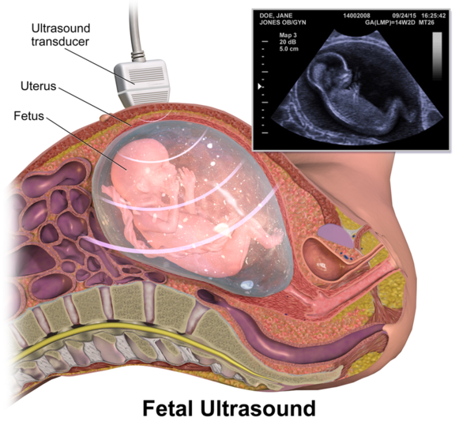 Ultrassom Fetal: BruceBlaus [CC BY-SA 4.0 (https://creativecommons.org/licenses/by-sa/4.0)]
https://upload.wikimedia.org/wikipedia/commons/e/ee/Fetal_Ultrasound.png
Instrumentação de Radio-Frequência para Imagens de Ressonância Magnética (MRI)
Prof. Dr. Daniel Papoti
Imagem por Ressonância Magnética (Magnetic Resonance Imaging, MRI) é uma técnica amplamente utilizada para diagnóstico clínico. As vantagens principais são:
- não invasiva (não cortamos o paciente)
- não utiliza radiação ionizante (radiação utilizada não provoca mudânças genêticas)
O contraste nas imagens depende basicamente da densidade de núcleos de hidrogênio em diferentes tecidos do corpo. O sinal emitido pela amostra será gerado pela interação dos núcleos de hidrogênio presentes nas amostras com campos magnéticos estáticos e ondas eletromagnéticas na frequência de rádio (RF).
Bobinas de RF são responsáveis pela transmissão e captação deste sinal. Seu projeto e construção envolvem conhecimento de eletromagnetismo e eletrônica analógica de alta frequência.
O grupo de instrumentação em engenharia biomédica da UFABC desenvolve projetos em parceria com a Faculdade de Medicina da Universidade de São Paulo para construção de bobinas de RF com aplicações para MRI em ultra-alto campos magnéticos (7 Teslas), sendo este um projeto pioneiro no país.

Impressão 3D para planejamento cirúrgico
Prof. Dr. John Andrew Sims
Imagens médicas, adquiridas com CT (raio-X) ou ressonância magnética, podem formar images 3D de alta resolução do corpo humano.
- Estas imagens facilitam planejamento cirúrgico de complexidade no hospital.
- A visualização da forma 3D de órgãos a partir de cortes 2D ou renderização 3D pode ser um desafio.
- Impressão 3D de estruturas e órgãos do corpo oferece uma nova abordagem para planejamento cirúrgico, tornando uma imagem 3D em objetos reais, que podem ser estudados ou cortados antes do procedimento.
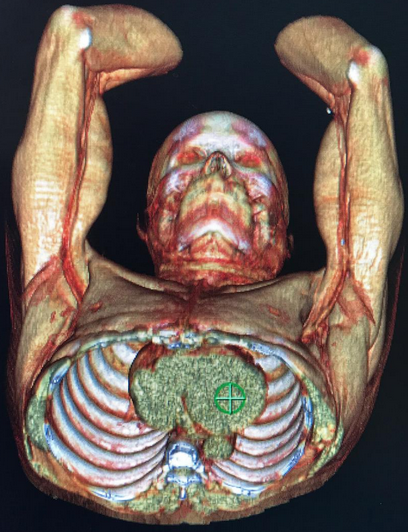 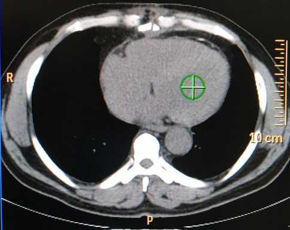
Exemplos de (i) renderização 3D do paciente e; (ii) corte 2D, ambos na tela do computador. Fica difícil para o médico avaliar tecido em outros planos, e compreender o problema do paciente no sentido 3D.
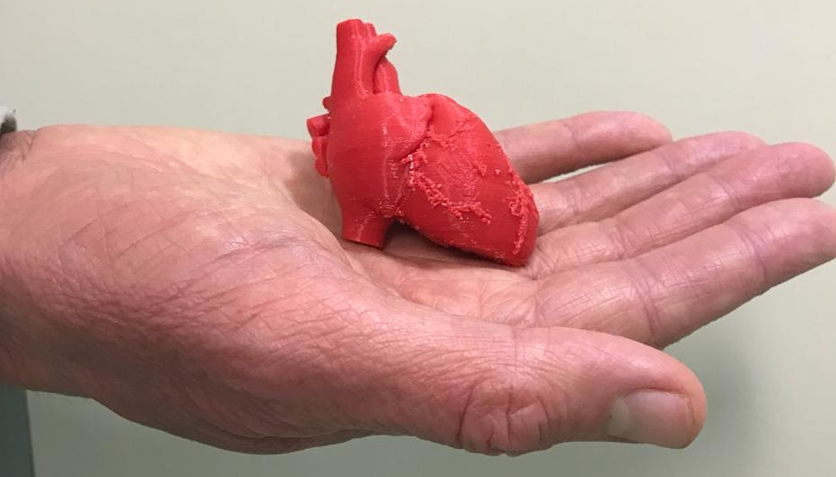
Impressão 3D do coração. O médico pode compreender a geometria do coração, prever possíveis problemas, e melhorar planejamento de intervenções. Este modelo foi impresso numa escala menor do que o coração do ser humano adulto.
Tomografia de impedância elétrica
Profs. Drs. Fernando Silva de Moura,
Olavo Luppi Silva e
Erick Dario León Bueno de Camargo
Introdução:
- Mais de 1/3 dos pacientes em unidades de tratamento intensivo (UTI) necessitam de ventilação mecânica por mais de 12h;
- Em torno de 24% dos pacientes com pulmões anteriormente saudáveis irão desenvolver formas médias ou severas da Síndrome do Desconforto Respiratório Agudo (SDRA) dentro dos primeiros 5 dias de ventilação artificial, com uma clara correlação entre mau ajuste do ventilador mecânico e incidência de SDRA;
- Para reduzir os riscos, estratégias ventilatórias protetivas devem ser utilizadas pelos intensivistas. Eles precisam ajustar meticulosamente os parâmetros do ventilador mecânico, de acordo com cada paciente.
Objetivo:
Desenvolver tecnologia de monitoramento em tempo real das condições cardiorrespiratórias em pacientes em leito de UTI, em tempo real, com o intuito de aumentar a capacidade de diagnostico e tratamento dos pacientes.
Nosso grupo pesquisa a técnica de impedância elétrica para monitoramento do paciente. Imagens tomográficas do tórax do paciente estão adquiridas a partir de medições elétricas em sua superfície.
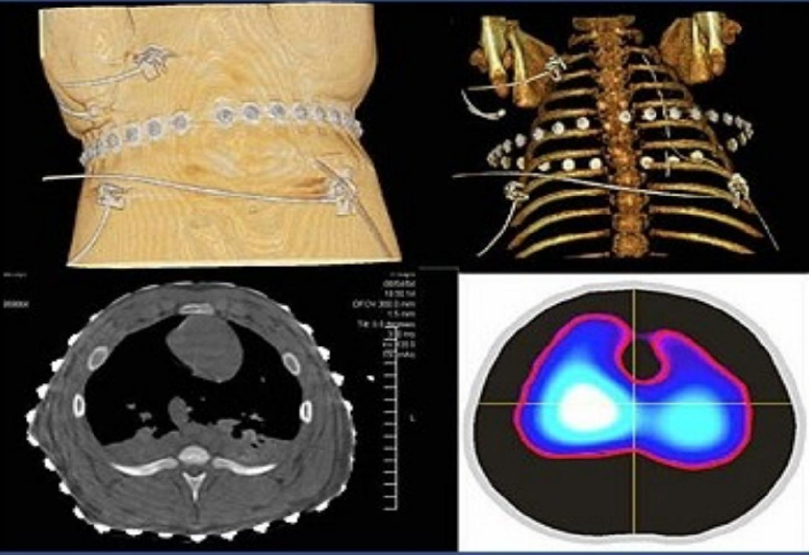
Uma cinta de eletrodos é posicionada ao redor do tórax do paciente. A imagem de Tomografia Computadorizada, que utiliza raio-X para aquisição (esquerda), mostra os tecidos nesta fatia com muita informação anatômica, mas pouca informação funcional sobre os pulmões, enquanto a imagem de Tomografia de impedância elétrica (direita) mostra a ativação de regiões dos pulmões. O equipamento de Tomografia de Impedância Elétrica pode ficar ligado ao paciente por longos períodos, fazendo medições em tempo real, durante ventilação mecânica. Já imagens de Tomografia Computadorizada só podem ser feitos em momentos específicos, com o translado do paciente para a sala de tomografia.
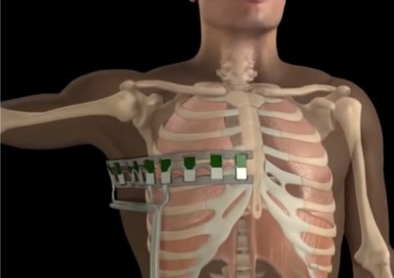
Posicionamento da cinta de eletrodos.
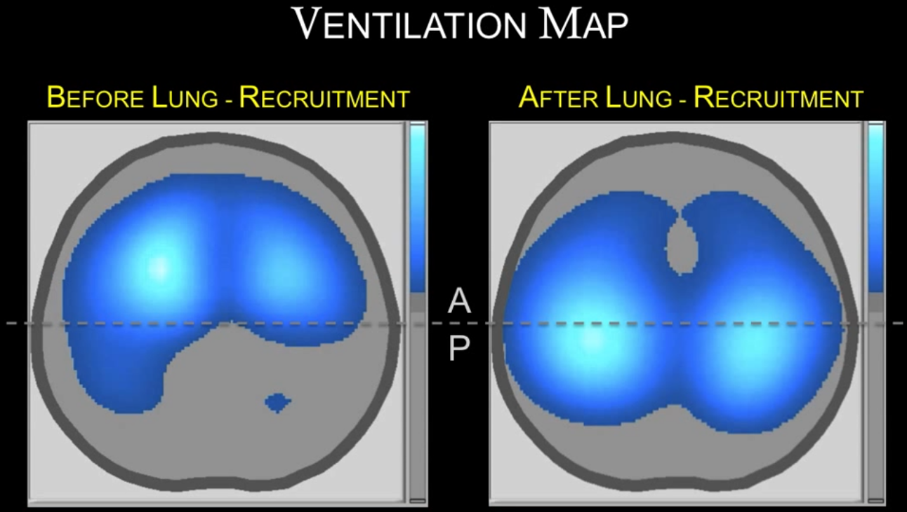
Mapa de ventilação, indicando as regiões do pulmão que estão sendo ventiladas, antes e depois de uma manobra de recrutamento alveolar.
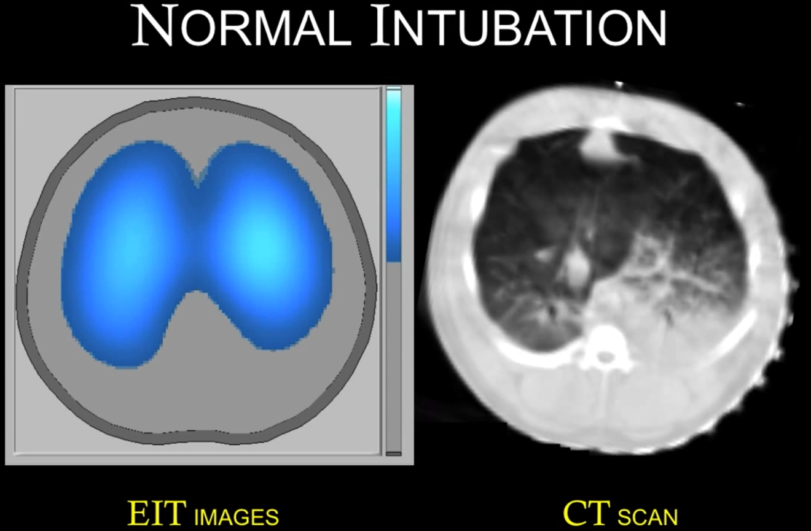
Imagem de TIE durante ventilação bilateral (nos dois pulmões).
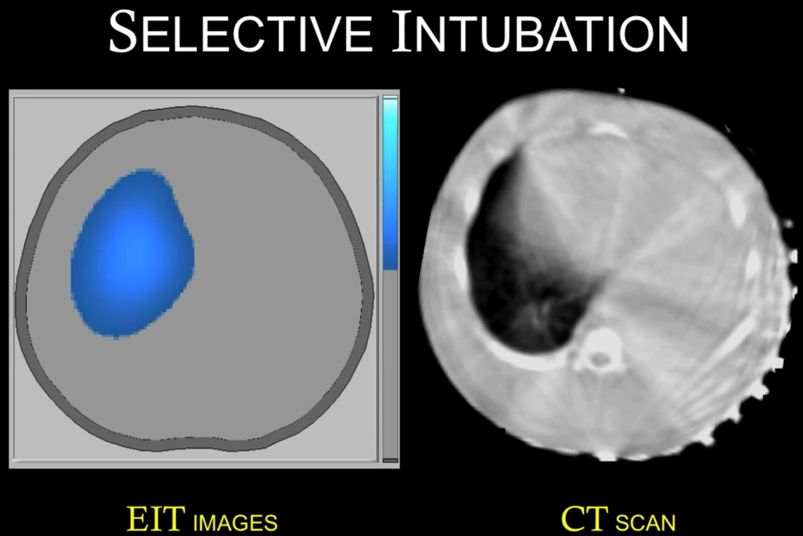
Imagem de TIE durante ventilação unilateral (em apenas um pulmão).
Biofotônica e Óptica Biomédica
Profas. Dras. Carolina Benetti, Ilka Tiemi Prates, Patricia da Ana e
Prof. Dr. Nasser A. Daghastanli
A Luz pode ser utilizada para diversos procedimentos Diagnósticos e Terapéuticos em Saúde Humana.
Veja a seguir algumas áreas de pesquisa em Biofotônica e Óptica Biomédica:
Diagnóstico usando Luz
Profas. Dras. Carolina Benetti, Ilka Tiemi Prates, Patricia da Ana e
Prof. Dr. Nasser A. Daghastanli
A luz proveniente de LASERS e LEDS pode ser empregada para diagnosticar várias doenças de forma eficiente, em tempo real e sem danos colaterais aos pacientes.
Métodos que empregam luz, tais como transiluminação, imageamento por fluorescência, imageamento por tomografia por coerência óptica, espectroscopia vibracional e imageamento por termografia já são empregados clinicamente, atuando como ferramentas poderosas para diagnóstico não invasivo de câncer, patologias oftalmológicas, patologias dentárias, inflamações, diabetes, oxigenação de sangue, e muitas outras.
Nosso grupo de pesquisa estuda a tomografia por coerência óptica e a espectroscopia FTIR para diagnóstico de tecidos cerebrais (Prof. Nasser Daghastanli), cárie e erosão dentárias e osteosporose (Profa. Patricia da Ana e Profa. Carolina Benetti). O grupo de pesquisa BHIG (Bioinformatics and Health Informatics Group) atua no desenvolvimento de plataformas para a integração e análise de dados médicos e biológicos para auxiliar no diagnóstico médico e no entendimento de patologias.
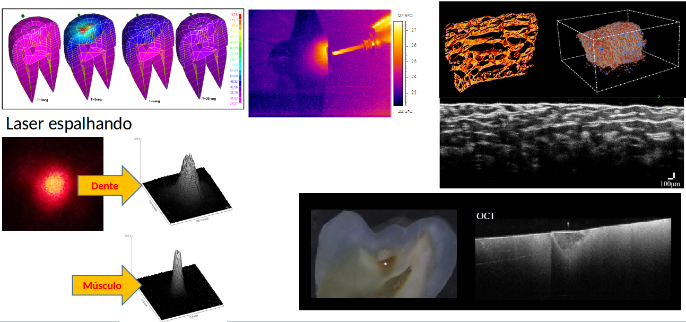
Tratamentos usando Luz
Profas. Dras. Carolina Benetti, Ilka Tiemi Prates, Patricia da Ana e
Prof. Dr. Nasser A. Daghastanli
A luz proveniente de LASERS e LEDS também é eficientemente empregada no tratamento de diversas doenças, tais como inflamações e dores no geral, assim como pode ser empregada para prevenção de doenças e bioestimulação de células e tecidos. Nosso grupo trabalha com lasers para biostimulação celular e de tecidos (Profa. Ilka Prates, Prof. Nasser Daghastanli e Profa. Patricia da Ana) e prevenção de cárie e erosão dentárias (Profa. Patricia da Ana).
A luz também pode ser usada para eliminação de tumores e microorganismos, empregando-se a técnica de Terapia Fotodinâmica. A Profa. Ilka Prates e o Prof. Nasser Daghastanli estudam esta técnica para eliminação de infecções fúngicas e câncer.
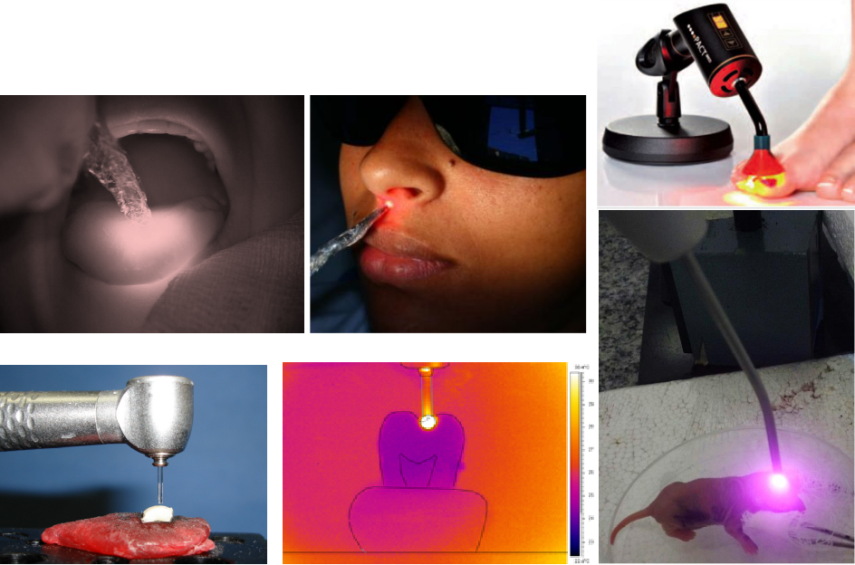